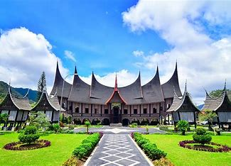
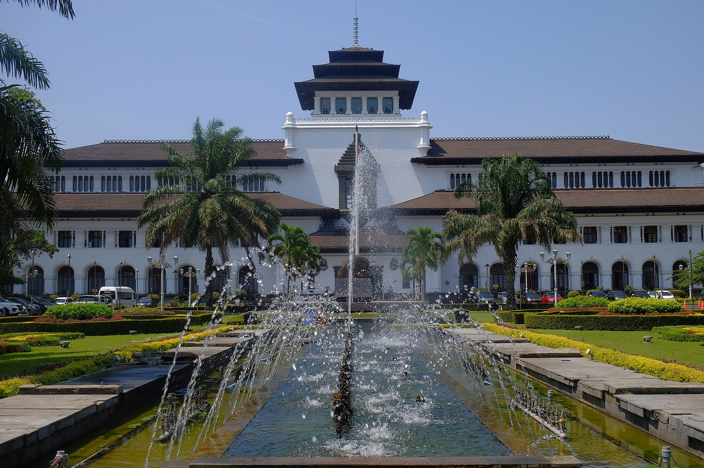
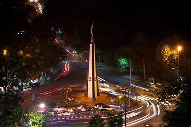

Padang
Kota Padang adalah kota terbesar di pantai barat Pulau Sumatra sekaligus ibu kota provinsi Sumatera Barat, Indonesia. Kota ini adalah pintu gerbang barat Indonesia dari Samudra Hindia.[8] Secara geografi, Padang dikelilingi perbukitan yang mencapai ketinggian 1.853 mdpl dengan luas wilayah 1.414,96 km², lebih dari separuhnya berupa hutan lindung.
Total Views
total coment
Ream More...
Bandung
Terletak 141 km di sebelah tenggara Jakarta, 363 km di sebelah barat laut Kota Semarang, 400 km di sebelah barat Kota Yogyakarta, 675 km (lewat Kota Semarang) & 765 km (lewat Kota Yogyakarta) di sebelah barat Kota Surabaya. Kota Bandung merupakan kota terbesar di bagian selatan Pulau Jawa. Pada akhir tahun 2023, jumlah penduduk Kota Bandung sebanyak 2.569.107 orang.
Total Views
total coment
{kind=link}
Ream More...
Bogor
Kota Bogor dikenal dengan julukan Kota Hujan, karena memiliki curah hujan yang lumayan sangat tinggi. Kota Bogor terdiri atas 6 kecamatan yang dibagi lagi atas sejumlah 68 kelurahan. Pada masa Kolonial Hindia Belanda, Kota Bogor dikenal dengan nama Buitenzorg yang berarti tanpa kecemasan atau aman tentram.
Total Views
total coment